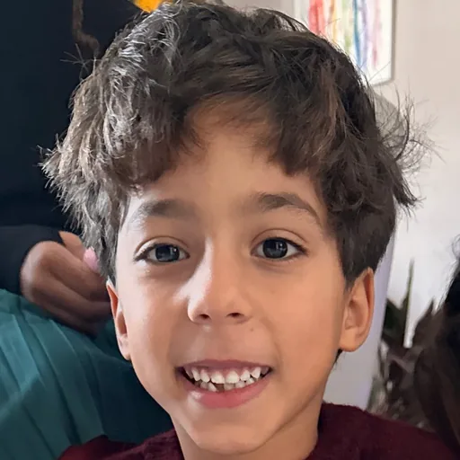
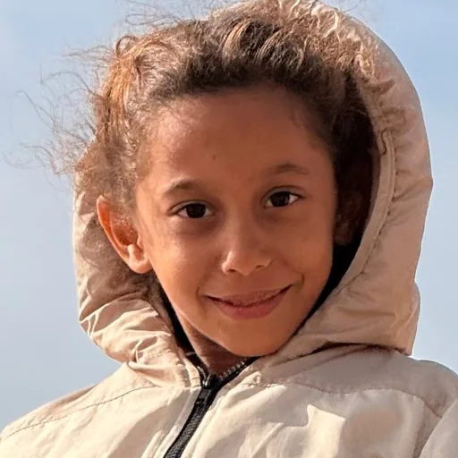

Science et vie
Des vidéos de science transformées en jeux à explorer du bout des doigts.


Pour Naïm et Alicia
-
Roche mère
L’histoire de la Terre et de la vie, en 13 mini-jeux.
D’après « Terre, les forces du vivant » (ARTE)
-
Le thermostat de la Terre
Pourquoi la Terre n’est ni un glaçon ni une fournaise, en 9 mini-jeux.
D’après une vidéo de Christophe Pauly
-
La force de l’atome
L’énergie nucléaire, ses atouts et ses limites. Bientôt ici.